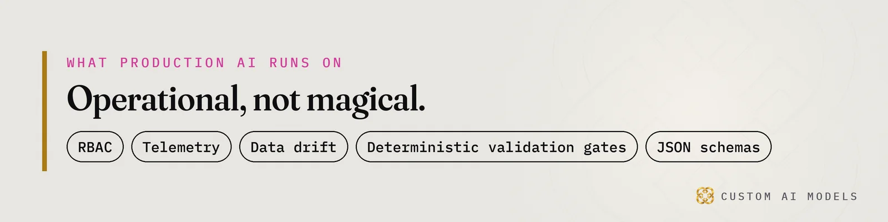
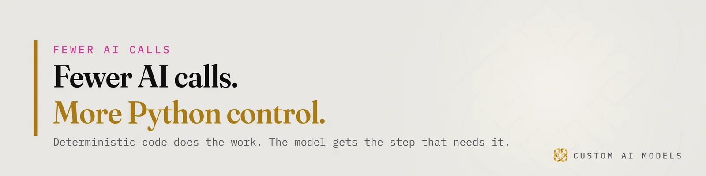
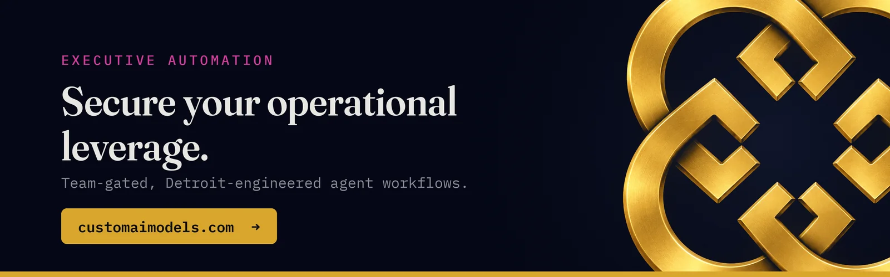

Custom AI Models
Custom AI Models Yeriko Vargas · Founder, Custom AI Models · Oct 2026
Yeriko Vargas · Founder, Custom AI Models · Oct 2026Short answer. Agents make production AI worse before better because every tool call adds a step that can fail quietly and pass its mistake along. Deterministic validation gates, telemetry and clean data turn that dip around. Custom AI Models builds the checks between steps first, then lets the model act inside them.
Why do AI agents make production worse before better?
Agents add steps, and every step is a new place to be wrong. A single prompt fails once, in front of you. An agent chain fails in the middle, says nothing, and hands its mistake to the next stage. That is the dip. The failure surface grows with every tool call, while your ability to see it stays flat. If you ran a demo and watched it break, you have already met the small version.
Custom AI Models has built this way since 2022, and the pattern repeats. Week one, the agent looks brilliant. Week three, it books the wrong thing, retries a call that should never repeat, and nobody can say which step went sideways. The model did not get worse. The system got longer, and nothing was checking the joints.
Our order never changes: unify the data, model it, gate every step, the model last. Agents jump to the end of that list. That is why they hurt first.

What breaks when an agent starts calling tools?
LLM tool calling turns text into actions, and text can be wrong in ways code cannot. The agent picks a tool, writes the arguments, reads the result and decides what to do next. Each of those four moves is a claim, not a fact. Without a check, a wrong claim becomes a real email, a real database write or a real invoice.
These are the failures we see most:
- A wrong tool gets picked because two descriptions overlap.
- Arguments parse cleanly but mean the wrong thing, like a date in the wrong format.
- Stale data from an early step leaks into a late one.
- A retry repeats a side effect, and the customer gets a second email.
- The agent reports a confident summary of a step that never ran.
We wrote about the habit that contains all five in Twelve tools, one Python pipeline: every call is a claim until a check proves it. The line between what the model decides and what code decides gets its own treatment in The model is a stage. The program is the system.
Gate every step with deterministic AI workflows
A gate is a few lines of code that answers yes or no. It never asks the model whether the model was right. Run a stage, validate the output against a JSON schema, read the exit code, and stop on a fail. Python owns the loop. The model owns one narrow job inside it. A headless call such as claude -p fits well here, because it hands text to a script that can judge it.
Four checks cover most of the damage:
- Shape: does the output parse into what the next stage expects?
- Range: is every value inside what the business allows?
- Identity: does the record the agent names exist in your database?
- Repeat: has this action already run once?
Fail loud. A gate that logs a warning and carries on is decoration. Exit non-zero, write the reason down, and let a human or a retry policy decide. Boring is the goal. These are deterministic validation gates, and they are what makes the second month better than the first.

Is the agent dip a model problem or a data problem?
Mostly data. An agent reads whatever you point it at, then acts on it. If two systems disagree about a customer, the agent picks one and sounds sure. Dirty data behind a chat box produces a bad answer. Dirty data behind an agent produces a bad action, and bad actions are where the legal and financial liability lives.
That is why Your AI didn't fail. Your data did. sits first in our order. It is also why replacing four spreadsheets came down to registration, retention and who is allowed to see what.
Permissions matter more once software can act. Apply RBAC to the tools, not only the data. An agent should hold the access of the person who launched it, and nothing wider.
How do you tell when agents are getting better?
Measure every step. You can only fix what you can see, and you can only see it with telemetry. Log each tool call, its arguments, its result, its gate verdict and its latency. Then run LLM evaluation on a fixed set of cases whenever you change a prompt or a model. If you cannot replay last Tuesday's failure, you cannot prove you fixed it.
Four numbers tell you which way the curve is bending:
- Gate pass rate, per stage.
- Wrong-tool picks, per tool.
- Retries per job.
- Shifts in input shape, the early sign of data drift.
The same loop holds up the retrieval systems in RAG isn't a feature. It's an architecture. The prompt sits in the middle. The telemetry around it does the work. When the curve turns, it turns because a gate caught what the model missed and you tightened it. Then you add the next agent.
Questions people ask
How long does the agent dip last?
It lasts until every step has a gate and a log. The dip ends when failures become visible and cheap to fix, not when the model gets smarter. Teams that wire validation and telemetry before adding the next agent shorten it. Teams that keep adding agents first stay inside it.
Should we drop agents and stay with a single prompt?
Not if the job needs several systems. A single prompt is easier to check, so keep it where one step is enough. Move to agents when the work crosses tools, and add the gates at the same time. The mistake is adding agents without the checks.
What data does an agent need before it can act safely?
One agreed record per customer, order or asset, with clear owners and retention rules. Agents act on what they read, so conflicting sources become wrong actions. Unify the data first, model it, then expose it to tools through narrow, permissioned calls.
Who should own the validation gates?
Engineering owns the code, and the business owns the rules inside it. An ops lead defines what a valid order or report looks like. An engineer turns that into a schema and a check that exits non-zero. Nobody should delegate that decision back to the model.
